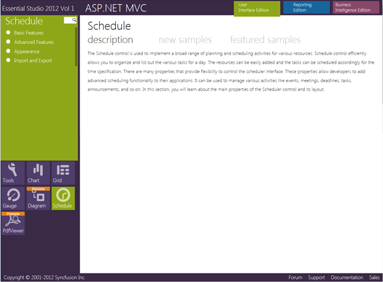

This section covers the location of the installed samples and describes the procedure to run the samples through the sample browser and online. It also provides the location of the source code.
Samples Installation Location
The Schedule MVC samples are installed in the following location, locally on the disk:
<Install Location>\Syncfusion\EssentialStudio\<Version Number>\MVC\Schedulemvc\samples\3.5
Viewing Samples
To view the samples, follow the steps given below:
1. Click Start-->All Programs-->Syncfusion-->Essential Studio <version number> -->Dashboard. Syncfusion Essential Studio Dashboard <version number> window is displayed.

Figure 2: Syncfusion Essential Studio Dashboard
2. In the Dashboard window, click Run Locally Installed Samples for ASP.NET MVC under User Interface Edition panel. The ASP.NET MVC Sample Browser window is displayed.
 Note: You can view the
samples in any of the following three ways:
Note: You can view the
samples in any of the following three ways:
· Run Locally Installed Samples-Click to view the locally installed samples
· Run Online Samples-Click to view online samples
· Explore Samples-Explore ASP.NET MVC samples on disk

Figure 3: ASP.NET MVC Sample Browser
3. Click Essential Schedule under Other Products. The Schedule samples are displayed.

Figure 4: Schedule Samples Displayed in the ASP.NET MVC Sample Browser
4. Select any sample and browse through the features.
Source Code Location
The default location of the Schedule MVC source code is:
[System Drive]:\Program Files\Syncfusion\Essential Studio\[Version Number]\MVC\Schedule.MVC\Src